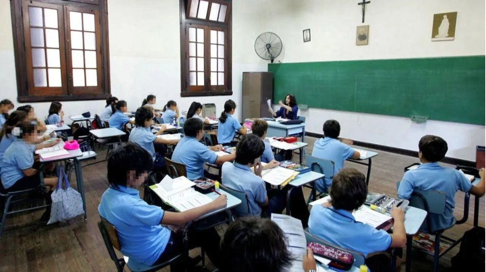

Argentina consolida su balance externo con un superávit de US$ 1.892 millones en diciembre
Argentina cerró diciembre con un saldo comercial positivo de US$ 1.892 millones, impulsado por un crecimiento en el volumen de exportaciones que permitió alcanzar un superávit anual acumulado de US$ 11.286 millones, consolidando así la estabilidad de las cuentas externas de cara al 2026.

Argentina completa la devolución del swap de monedas al Tesoro de Estados Unidos
Argentina canceló la totalidad de los fondos utilizados del swap con el Tesoro de EE. UU. utilizando financiamiento multilateral para fortalecer su perfil de deuda y la relación con Washington.
El BCRA fortalece las reservas con un nuevo acuerdo REPO por USD 3.000 millones
El Banco Central cerró un nuevo acuerdo REPO con bancos internacionales por USD 3.000 millones, con el objetivo de fortalecer las reservas, reflejando un mayor interés del mercado y una mejora en el acceso al financiamiento externo.
El Banco Central volvió a comprar dólares por segundo día consecutivo y reforzó las reservas en el inicio de 2026
La autoridad monetaria adquirió USD 83 millones en el mercado cambiario por segundo día consecutivo, en el marco del nuevo esquema de política monetaria, impulsando la acumulación de reservas y una mayor estabilidad del tipo de cambio.
El BCRA volvió a comprar dólares tras poner en marcha su nuevo plan monetario

El Banco Central volvió a intervenir en el mercado oficial y compró dólares por primera vez en meses, en el marco del nuevo plan de política monetaria orientado a fortalecer las reservas y sostener la estabilidad cambiaria.
El BCRA ajustará las bandas de flotación del dólar por inflación desde enero de 2026
El Banco Central anunció que las bandas de flotación del tipo de cambio se actualizarán mensualmente según la inflación a partir de enero de 2026. Además, se implementará un programa para fortalecer la acumulación de reservas.
El IPC de noviembre fue del 2,5% y suma 31,4% en la medición anual

La inflación de noviembre fue del 2,5% y acumula 27,9% en los primeros once meses del año, según informó el INDEC. En los últimos doce meses, el índice registra una suba del 31,4%, manteniendo la tendencia de desaceleración inflacionaria.
La inflación de octubre se aceleró al 2,3% según el INDEC
La inflación de octubre fue del 2,3%, con un alza anual del 31,3%, impulsada por aumentos en vivienda y alimentos.
El Gobierno desregula las cuotas de los colegios privados y elimina el control estatal
A través de un decreto, se derogó una normativa vigente por más de 30 años que obligaba a las instituciones a informar y consensuar los aumentos de aranceles.